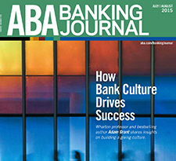
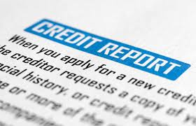

Search through our hand-picked list of the best financial resource sites on the web and find out what they specialize in and how to use them.
360 DEGREES OF FINANCIAL LITERACY
DESCRIPTION:
A financial literacy website run by the AICPA (American Institute of CPAs). It’s organized by both life stages and financial topics.
TOPICS COVERED:
Budgeting, Investing, Small Business Ownership, Homeownership, College Savings, Retirement, Insurance
To know more

ABA BANKING JOURNAL
DESCRIPTION:
The flagship monthly journal for the American Bankers Association can be helpful for people besides bankers. The site features articles with perspective and context on the latest news in the financial services market.
TOPICS COVERED:
Banking, Saving, Investing, Current Events, Regulation, Legislation
To know more
WALLSTREET & TECHNOLOGY
DESCRIPTION:
From InformationWeek, this site features news and information on technology and the financial markets. High quality sources are written by respected industry experts with a target audience of executives, traders, and IT directors.
TOPICS COVERED:
News, Advice, Technology, Investing, Financial Industry
To know more

ANNUAL CREDIT REPORT
DESCRIPTION:
The only source for free credit reports, Americans can view free credit reports from the three major credit bureaus (TransUnion, Equifax, and Experian) once a year, as mandated by federal law.